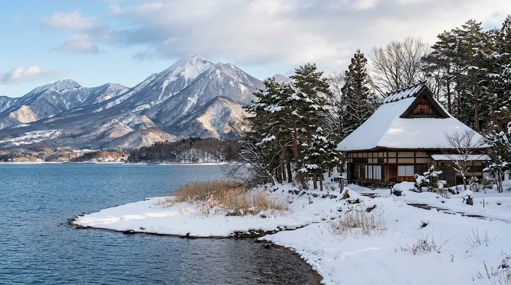

豬苗代湖冬景（猪苗代湖）
西会津古民家・書坊（ひととき）
- 14:05抵達仙台空港（Sendai Airport）（UO890，09:00 香港 → 14:05 仙台），辦理入境與提取 4WD 休旅車（預留約 2 小時緩衝）。
- 16:05經磐越自動車道（Ban-etsu Expressway）途經豬苗代湖（Lake Inawashiro / 猪苗代湖）前往會津若松（Aizuwakamatsu / 会津若松）（約 1 小時 55 分）。
- 18:00於會津若松（会津若松）超市或酒鋪採買福島清酒、刺身及晚餐食材（如未事先預約民宿家庭料理）。
- 18:30西行前往西会津（Nishiaizu / 西会津）（約 35 分），於 20:00 前完成入住。
- 晚間於古民家餐桌享用晚餐，並在書坊 lounges 小酌放鬆。
下榻住宿
暮らしの体験宿 ひととき（Kominka Stay Hitotoki）（整棟包棟、2間樓上臥室、2個洗手間、免費泊車）
| 早餐 Breakfast | 午餐 Lunch | 晚餐 Dinner |
|---|---|---|
| 機上 / 自行安排 | 機上 / 機場輕食 | 古民家晚餐 / 會津地酒與小食 |